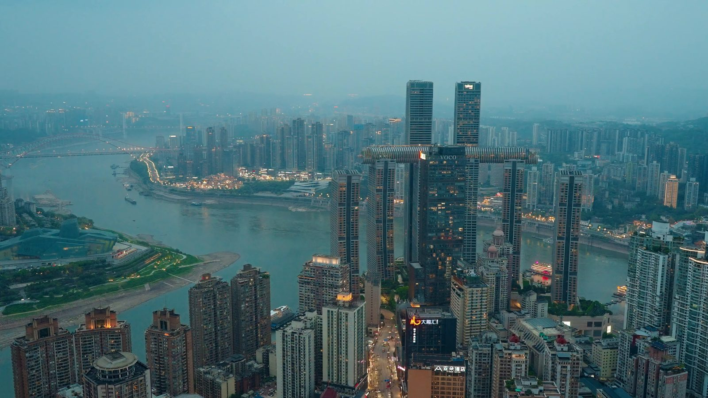
충칭 사진을 보면 길이 머리 위에도 있고 발밑에도 있다. 열차가 아파트 건물을 뚫고 지나가고, 11층에서 나가도 1층에서 나가도 길이다. 사람들이 이 도시를 '8D 도시'라고 부르는 이유다. 충칭은 왜 이렇게 입체적인 모양이 됐을까?
1. 서울의 136배, 남한의 82%
먼저 크기부터 보자. 충칭시 면적은 82,400㎢다. 서울(605㎢)의 136배, 남한 면적의 82%쯤 된다. 충칭은 성(省)과 같은 급의 직할시라서, 시 경계 안에 도시뿐 아니라 산골 마을과 농촌까지 들어 있다.
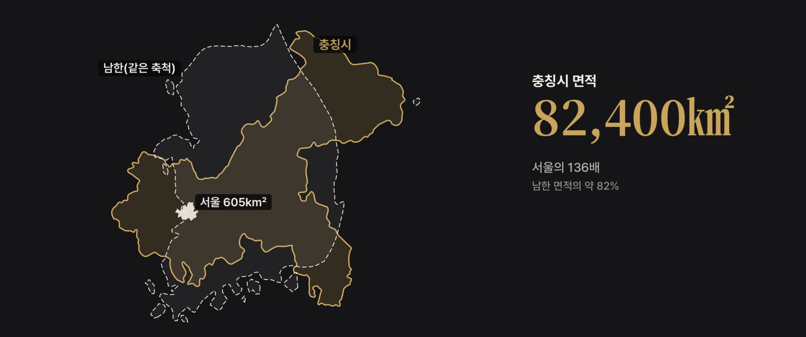
2025년 말 충칭시 상주인구는 3,187만 명으로 서울의 세 배가 넘는다. 다만 우리가 '충칭'이라고 떠올리는 중심 시가지에 사는 사람은 2024년 기준 1,058만 명이다.
| 항목 | 충칭 | 서울 |
|---|---|---|
| 면적 | 82,400㎢ | 605㎢ |
| 인구(2025년 말) | 3,187만 명 | 934만 명 |
| 중심 시가지 인구(2024) | 1,058만 명 | — |
| 도시화율 | 73.0% | — |
| 다리 | 2만 개 이상 | — |
| 도시철도(2025년 말) | 582.6km | — |
출처: 충칭시 통계국 2025 통계공보, 제일재경, 인민일보, 중국도시궤도교통협회, 통계청(서울 인구)
2. 두 강이 만나는 반도에서 시작했다
충칭 한가운데에서 장강(양쯔강)과 자링강이 만난다. 두 강 사이로 혀처럼 튀어나온 땅이 위중반도이고, 그 끝이 차오톈먼이다. 위중반도의 면적은 24㎢로 서울 종로구만 하다. 충칭은 이 좁은 반도에서 시작했다.
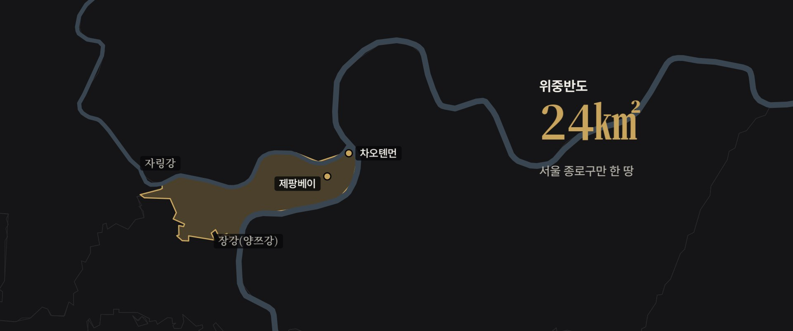
땅이 좁고 비탈지다 보니 사람들은 강가 절벽에 기둥을 세우고 집을 올렸다. 이런 집을 댜오자오러우(吊脚楼)라고 한다. 지금 관광지로 유명한 훙야둥은 그 모습을 되살려 2006년 충칭시가 지은 거리다.
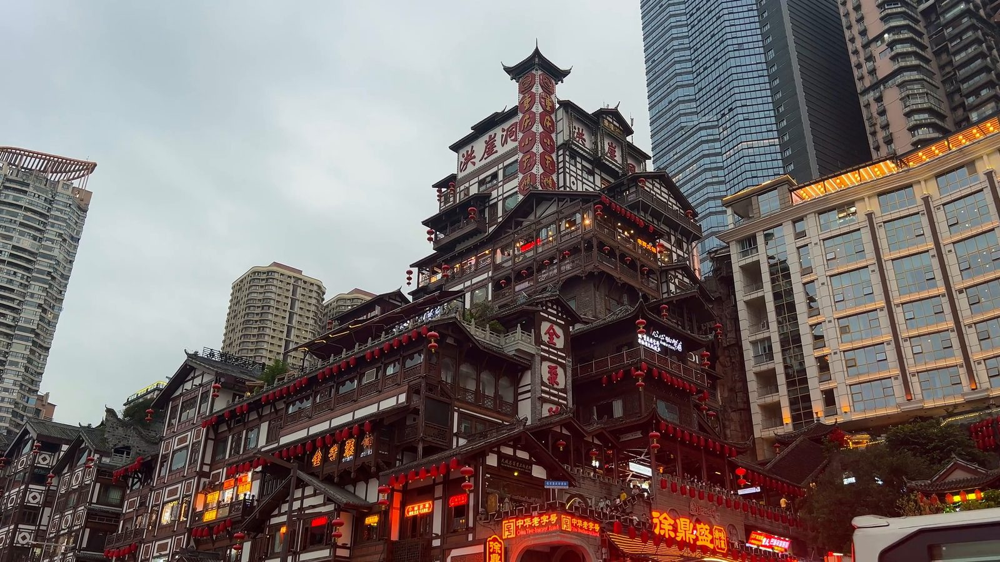
충칭이라는 이름은 1189년에 생겼다. 남송의 왕자가 이 지역의 왕으로 봉해진 뒤 황제가 되자 '두 번 겹친 경사'라는 뜻으로 충칭부(重慶府)라 불렀다. 강은 이 도시의 길이었다. 장강 뱃길은 상하이까지 이어졌고, 1891년 충칭은 내륙 도시로는 처음 외국에 항구를 열었다.
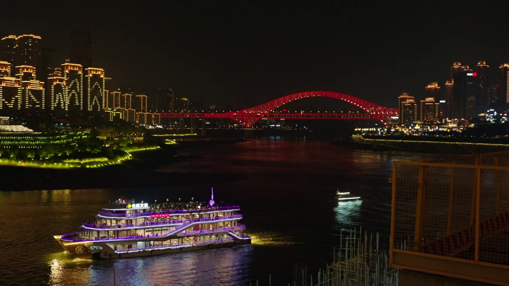
1937년 11월부터 1946년 5월까지는 중일전쟁을 피해 옮겨 온 중화민국의 임시 수도였다. 관청과 사람이 몰려들면서 반도 밖으로 도시가 넘치기 시작했다. 1997년에는 베이징·상하이·톈진에 이어 네 번째 직할시가 됐다.
3. 사람들은 세 번 옮겨 갔다
주거와 상업의 중심은 크게 세 번 옮겨 갔다.
① 위중반도 · ~1960년대
오랫동안 충칭의 중심은 반도 한가운데 제팡베이 일대였다. 좁은 땅에 상점과 관청, 집이 층층이 들어찼다.
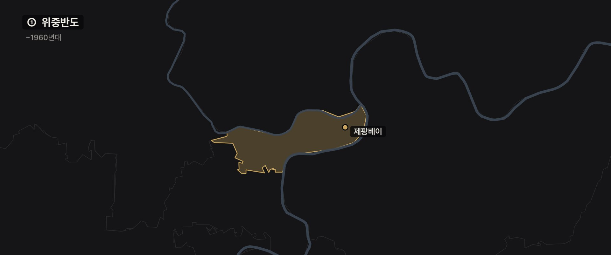
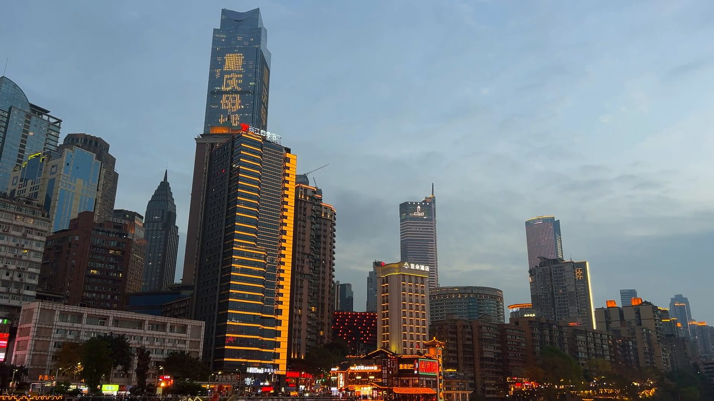
② 강 건너편으로 · 1966년~
1966년 1월 시내에 처음으로 강을 건너는 다리(뉴자오퉈 자링강대교)가 놓였다. 그전에는 배를 타야 강을 건널 수 있었다. 다리가 하나씩 늘면서 북쪽 장베이의 관인차오, 남쪽 난안의 난핑, 서쪽 사핑바, 주룽포의 양자핑으로 동네가 퍼졌다. 2003년 사핑바 싼샤광장과 양자핑이 차례로 상권으로 자리 잡았다. 지금 중심 시가지에서 강을 건너는 다리는 38개다.
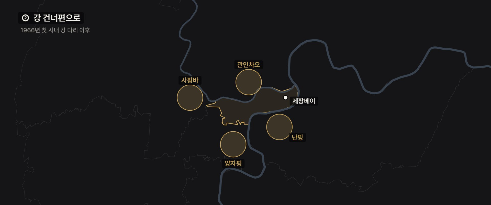
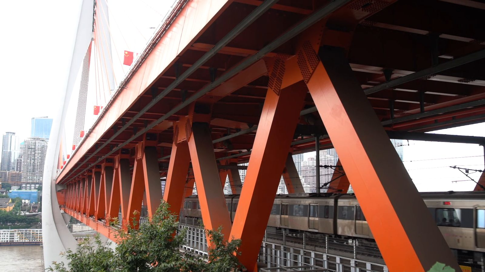
③ 북쪽 신도시 량장신구 · 2010년~
2010년 6월 18일 국가급 신구인 량장신구가 생겼다. 두 강이 만나는 맞은편 장베이쭈이에 금융가가 들어섰고, 북쪽 리자와 웨라이, 공항 가는 길에 새 아파트 단지가 생겼다. 2025년 11월에는 장베이구·위베이구와 합쳐 면적 약 1,360㎢, 인구 약 352만 명의 구가 됐다.
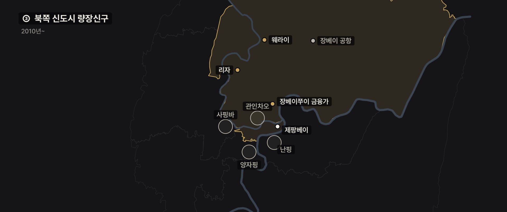
4. 산비탈 위로 쌓은 집
지금 충칭 사람 대부분은 산비탈에 선 고층 아파트에 산다. 평지가 모자라니 위로 올렸고, 건물 사이가 아주 좁다.
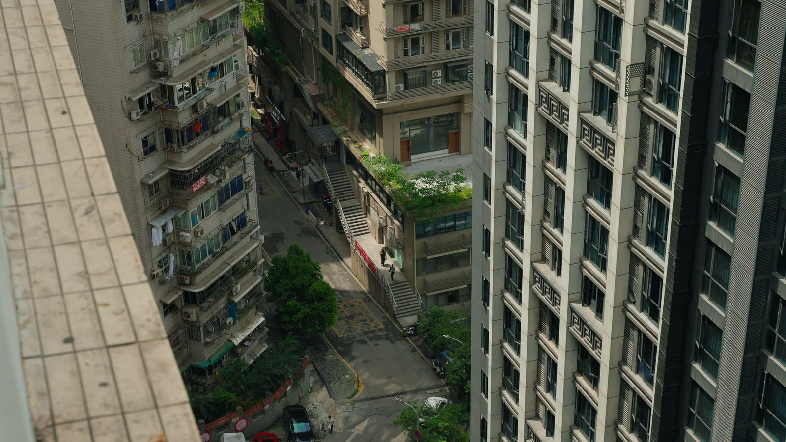
길도 산 중턱마다 나 있다. 그래서 건물과 건물을 공중 다리로 잇기도 하고, 건물 중간층이 도로와 바로 닿기도 한다. 11층짜리 훙야둥은 1층이 강변도로, 11층이 위쪽 창바이로에 닿는다. 어느 층으로 나가도 길인 셈이다.
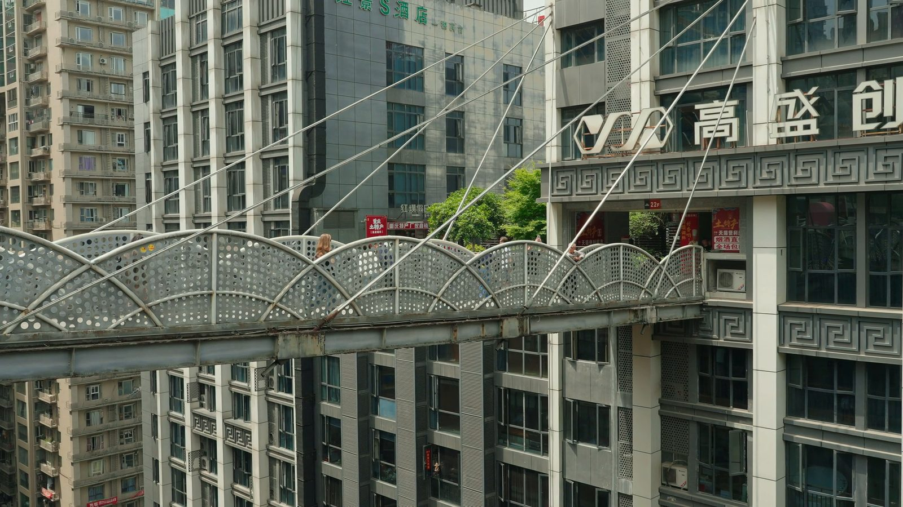
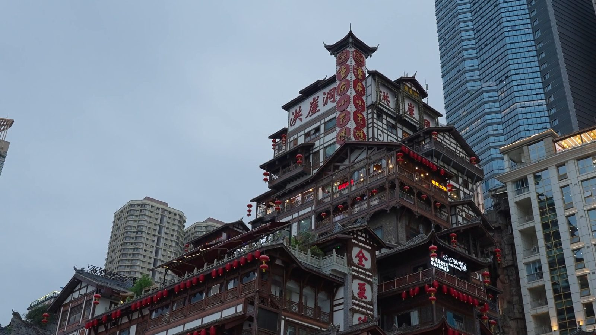
5. 3,187만 명이 사는 도시
충칭시 사람 열 명 중 일곱은 도시에 산다. 2025년 도시화율은 73.0%였다. 인구는 2023년부터 3년째 조금씩 줄었지만, 2025년에도 밖에서 들어온 사람이 나간 사람보다 11만 명 넘게 많았다. 출생아가 줄어든 만큼을 유입이 메우는 구조다.
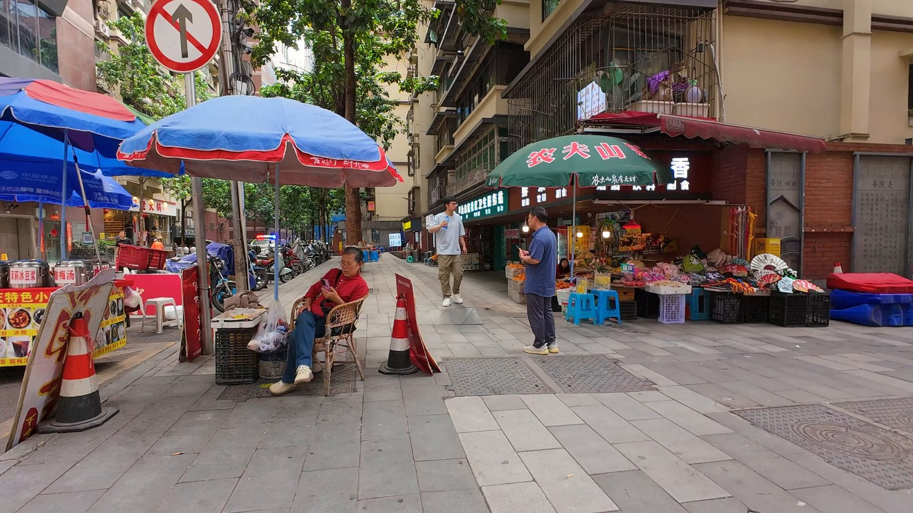
오래된 거리 츠치커우에는 비 오는 날에도 사람이 몰리고, 저녁이면 골목마다 매운 훠궈와 길거리 음식 냄새가 퍼진다.
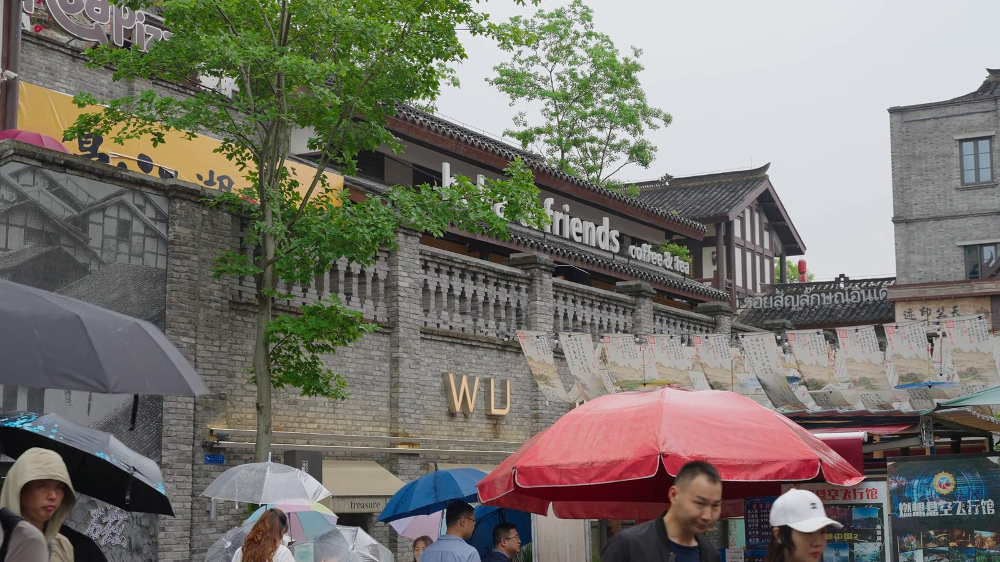
6. 모노레일과 다리의 도시
이 도시 교통의 상징은 건물을 뚫고 지나가는 모노레일이다. 2호선 리쯔바역은 19층 건물 안에 있다. 1~5층은 상가와 사무실, 6~8층은 역(대합실·설비·승강장), 9~19층은 집이다. 역과 건물은 1998년에 함께 설계됐다. 설계자는 선로를 돌리거나 건물을 다른 곳에 짓는 대신, 비용을 줄이려고 둘을 한 건물에 넣었다고 설명한다.
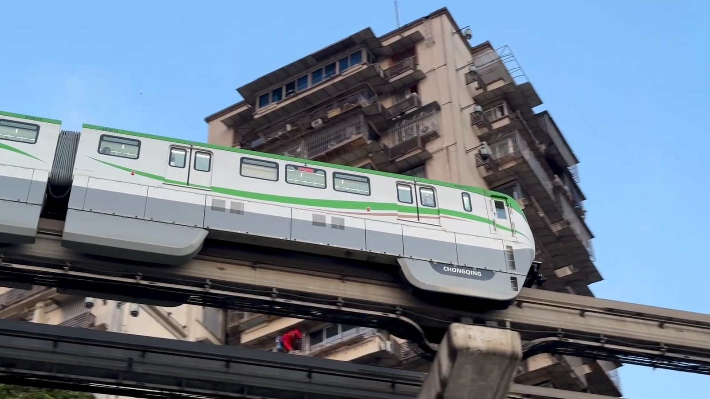
산이 많은 충칭은 가파른 비탈과 급한 곡선을 잘 타는 모노레일을 일찍 깔았다. 2025년 말 도시철도는 582.6km이고, 그중 모노레일이 98.45km다. 2026년 11월 12일에는 무인으로 달리는 급행선 15호선 일부 구간도 열렸다.
다리는 2만 개가 넘는다. 장강과 자링강을 건너는 큰 다리만 105개라서 충칭은 '다리의 도시(橋都)'로도 불린다.
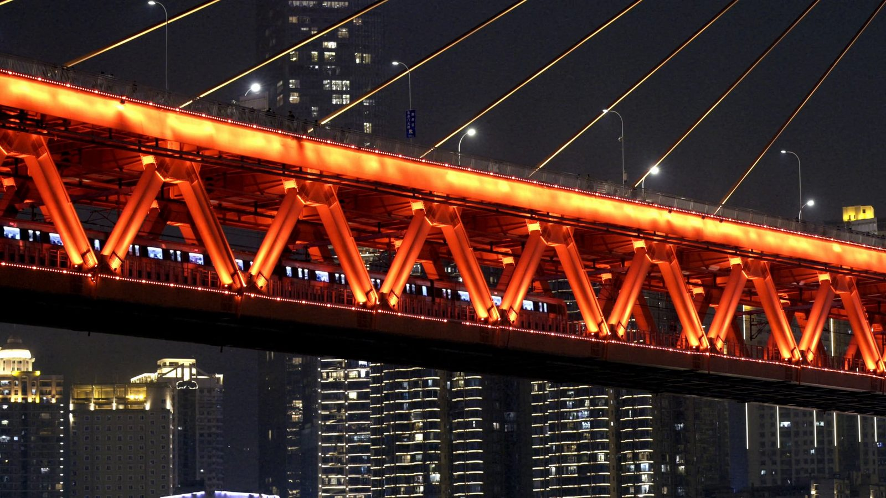
7. 한국과 이어진 도시
1919년 상하이에서 출범한 대한민국 임시정부는 일본의 추격을 피해 항저우, 전장, 창사, 광저우, 류저우, 치장을 거쳐 1940년 9월 충칭에 자리 잡았다. 같은 달 17일 이곳에서 한국광복군이 창설됐고, 임시정부는 1945년 11월 귀국할 때까지 충칭에 머물렀다. 마지막 청사(위중구 롄화츠)는 지금 기념관으로 남아 있다.
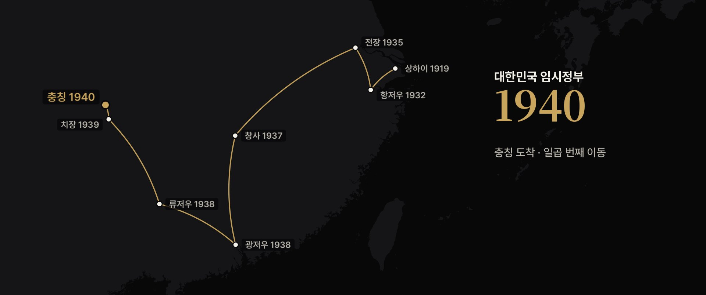
한국 기업도 이 도시에 들어왔다. SK하이닉스는 2014년 7월부터 충칭에서 낸드플래시 패키징·테스트 공장을 운영해 왔다. 2026년 8월에는 이 공장 지분 매각을 검토한다는 보도가 나왔고, 회사는 "확정된 것은 없다"고 밝혔다. 현대차는 충칭에 공장을 지었다가 2024년 1월 매각했다.
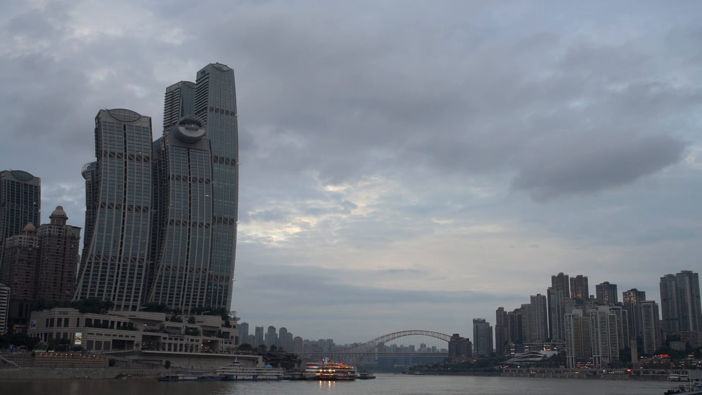
8. 한국에서 가는 법
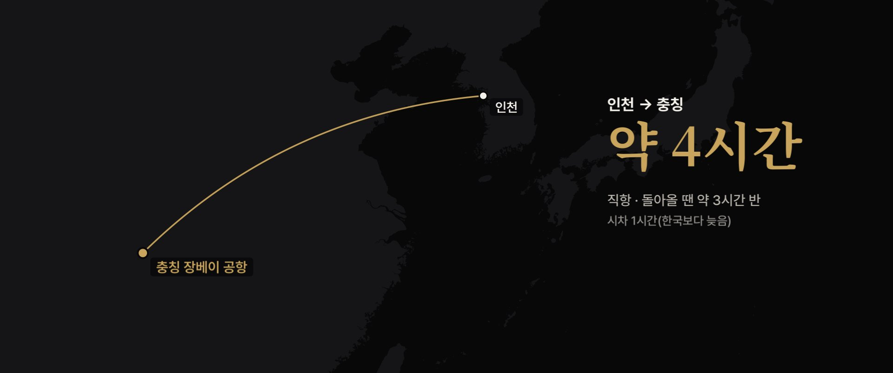
| 항목 | 내용 |
|---|---|
| 비행 | 인천–충칭 직항 약 4시간 5분(돌아오는 편 약 3시간 35분) |
| 시차 | 한국보다 1시간 늦다 |
| 비자 | 한국 일반여권 30일 무비자, 2026년 12월 31일까지(2027년 연장은 11월 17일 현재 미발표) |
| 항공권 | 검색 기준 왕복 약 30만~55만 원(직항·경유, 시기에 따라 다르다) |
비자 조건과 항공권 값은 바뀔 수 있다. 출국 전에 주한중국대사관 공지와 항공사 일정을 다시 확인하자.
9. 정리
| 연도 | 일어난 일 | 도시 모양으로 보면 |
|---|---|---|
| 1189 | 충칭부라는 이름 | 두 강 합류부의 성곽 도시 |
| 1891 | 내륙 도시 첫 개항 | 장강 뱃길 항구 |
| 1937~1946 | 중화민국 임시 수도 | 반도 밖으로 넘친 도시 |
| 1940~1945 | 대한민국 임시정부 | 한국과의 인연 |
| 1966 | 시내 첫 강 다리 | 강 건너편으로 확장 |
| 1997 | 네 번째 직할시 | 시 경계 82,400㎢ |
| 2010 | 량장신구 출범 | 북쪽 신도시 |
| 2025~2026 | 량장신구 통합, 15호선 개통 | 북쪽 축이 커지고 철도 확장 |
정리하면 충칭은 두 강이 만나는 좁은 반도에서 시작해, 다리를 놓아 강 건너편으로, 다시 북쪽 신도시로 커졌다. 평지가 모자란 산 위에서 커지다 보니 길과 집과 철도를 층층이 쌓을 수밖에 없었고, 그 결과가 지금의 '8D 도시'다.
이 글은 브동산 유튜브 '도시이야기 2 · 충칭' 영상과 함께 만들었다.
참고한 자료
충칭시 통계국·국가통계국 충칭조사총대, 「2025년 충칭시 국민경제·사회발전 통계공보」(2026.3.26) ↗ · 제일재경, 「충칭 중심 시가지 상주인구 1,058.46만 명(2024)」(2026.2.26) ↗ · 중국도시궤도교통협회, 「2025년 중국 내륙 도시궤도교통 노선 개황」(2026.1.1) ↗ · 신화통신, 「충칭 첫 무인 운행 도시궤도 급행선 개통」(2026.11.12) ↗ · 인민일보, 「충칭 다리 2만 개 이상, 장강·자링강 횡단 특대교 105개」(2025.3.31) ↗ · 충칭상보, 「2024 충칭 중심 시가지 교통발전 연보 ↗ · 충칭일보, 「1966년 1월 시내 첫 강 횡단 다리(뉴자오퉈 자링강대교) 개통」(2021.7.1) ↗ · 국민경략(후시우), 「량장신구·장베이구·위베이구 통합, 면적 약 1,360㎢·인구 약 352만」(2025.11.10) ↗ · 중국신문망, 「리쯔바역 설계자 인터뷰 ↗ · 씨트립, 「훙야둥 11층·높이 79m, 1층과 11층 모두 도로에 접함」 ↗ · 위키피디아, Chongqing ↗ · 위키피디아(광둥어), 重慶 ↗ · 윈상왕, 「충칭 상권 발전사 ↗ · 제일재경, 「충칭 2025년 인구 3.21만 명 감소, 순유입 11.49만 명」(2026.3.26) ↗ · 메이구, 「훙야둥 ↗ · KAYAK, 인천–충칭 왕복 항공권 검색(2026) ↗ · 서울신문, 「대한민국 임시정부 100년 ↗ · 경향신문, 「1940년 9월 17일 충칭에서 한국광복군 창설」(2018.9.4) ↗ · 머니투데이방송, 「SK하이닉스 충칭 공장(2014년 7월 양산) 지분 매각 검토」(2026.8.9) ↗ · 다음뉴스, 「Hyundai Motor Group sells Chongqing factory」(2024.1.17) ↗ · 한국경제, 「중국 무비자 2026년 12월 31일까지 연장」(2025.11.3) · 연합뉴스(2026.11.17) 연장 여부 미발표 ↗ · 호텔스컴바인·KAYAK, 인천–충칭 직항 약 4시간 5분(돌아오는 편 약 3시간 35분) ↗
사진: Pexels 영상 캡처(Pexels License). 지도: 브동산 자체 제작 개략도(© OpenStreetMap contributors · Natural Earth).